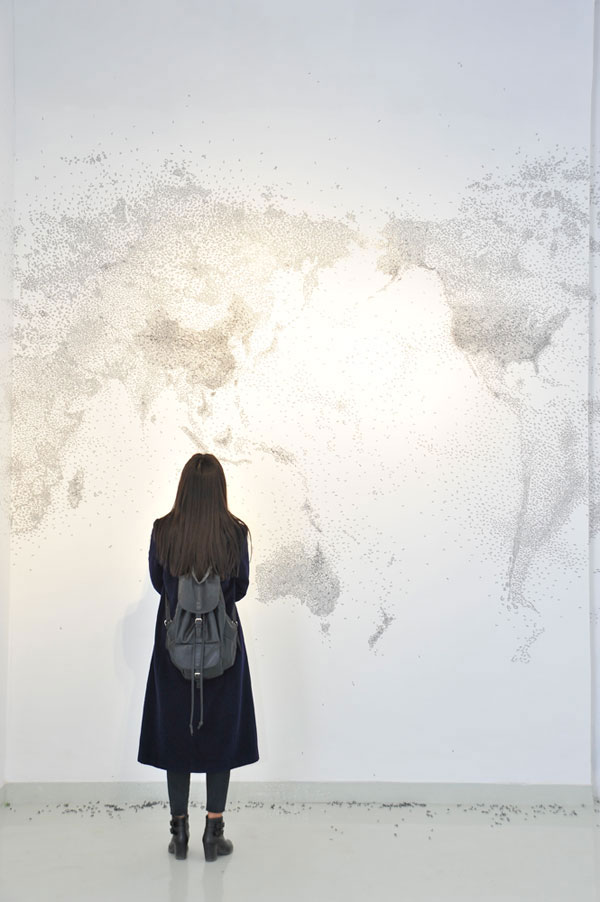

The world map was made of thousands of flying 'Flies' on the wall. Each 'Fly' was made by one Chinese phrase, and each phrase consisted of two Chinese characters. They looked like flies, however, it did not matter if they were positive or negative phrases, they were all desired 'Flies' floating and struggling with each other – it is like what happens each minute in our real world. All of these floating flies, blured countries and borders gradually, they also meant that the unique feature of each place's culture is disappearing gradually. A great deal of 'Flies' also died in this process.
This artwork was pasted on the wall one by one. The artist spent five days to finish this artwork with a few assistants' help. Because all the materials of this artwork were pasted directly on the wall, the artwork disappeared when the exhibition is closed.